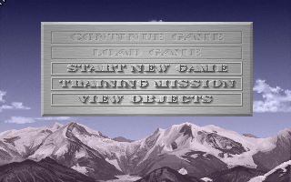
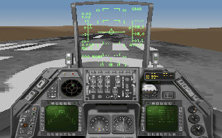

名稱：陸空戰將 (Strike Commander，英文版)
簡介：Origin 1993年出品的飛行戰鬥模擬遊戲，由EA代理發行，台灣由智冠代理進口。同年
推出「語音資料片（Speech Pack）」和「戰術行動資料片（Tactical Operations）」。
1994年推出整合光碟版 [待補]。


備註：本版為光碟版
保護：磁片版為手冊密碼（安裝時），光碟版為光碟。磁片版破解碼：
MKGAME.EXE
74 65 1E B8
90 90 -- --
光碟版將光碟內容拷貝到安裝目錄，即可免光碟。
備註：磁片版安裝戰術行動資料片時需執行INSTALL -A，否則可能會出現Drive error錯誤。
檔案：sc-disk.rar = 磁片版F1.4版+語音資料片+戰術行動資料片F2.1版
（要玩主程式請輸入PLAY.BAT，要玩資料片請輸入PLAYX.BAT）